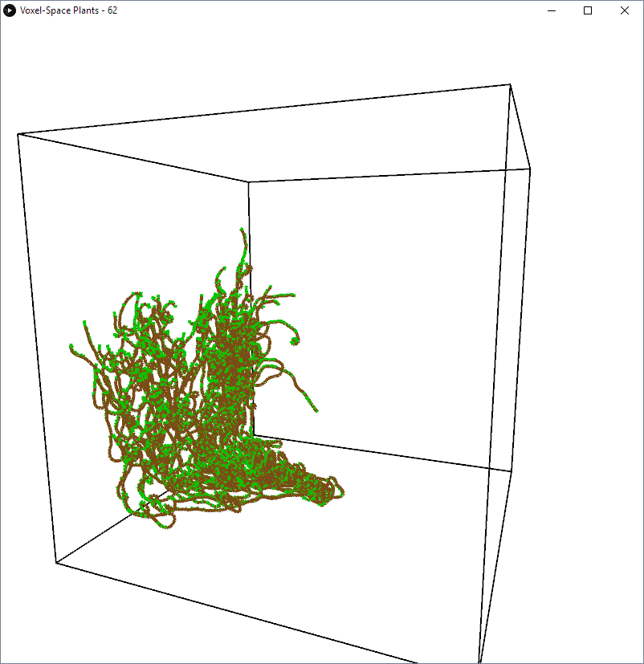
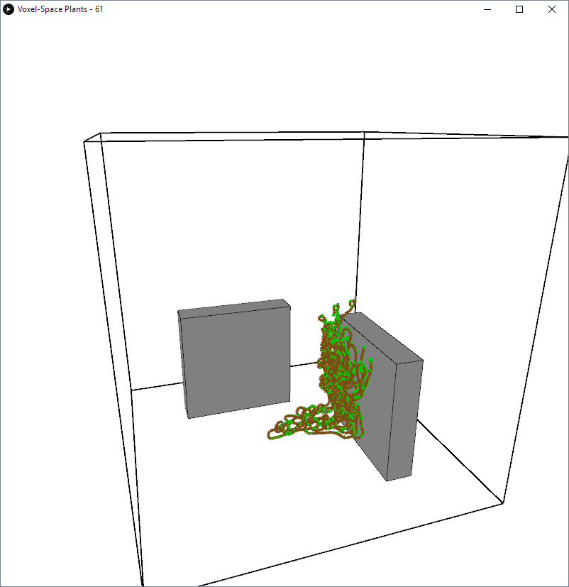
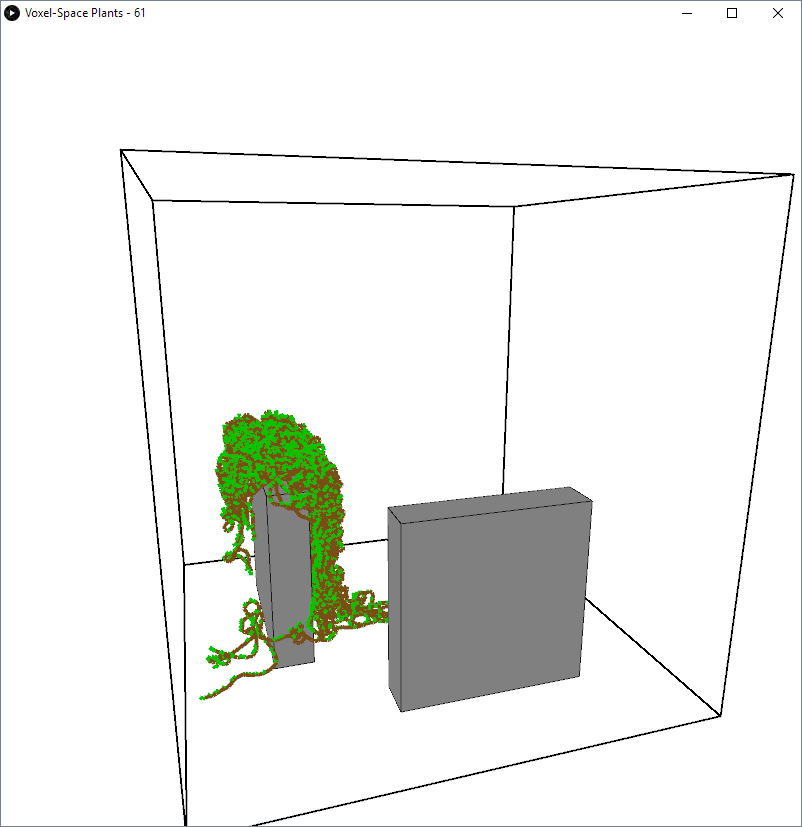
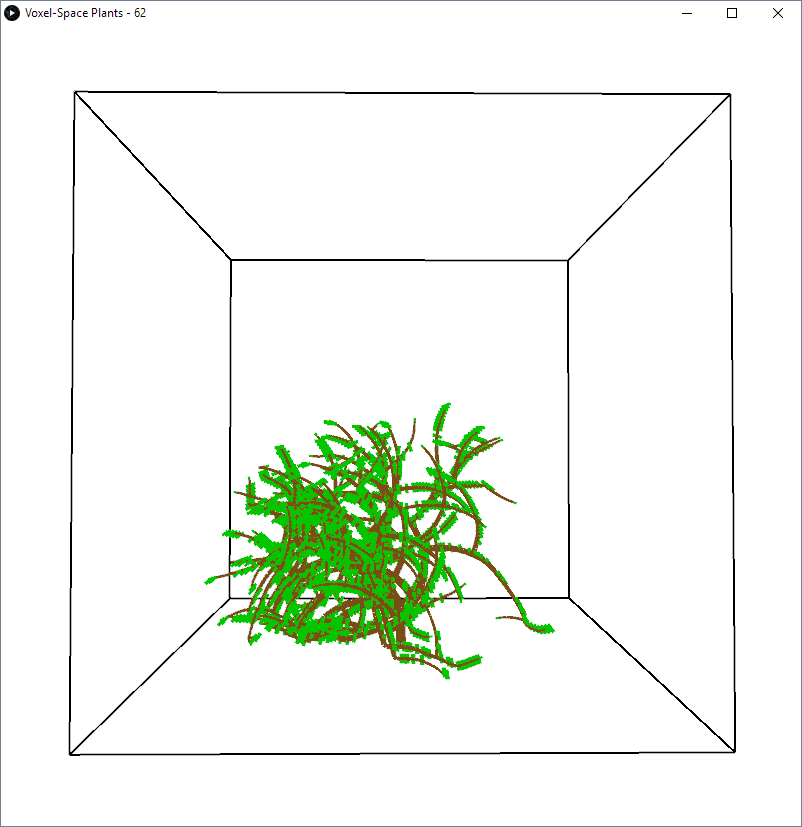
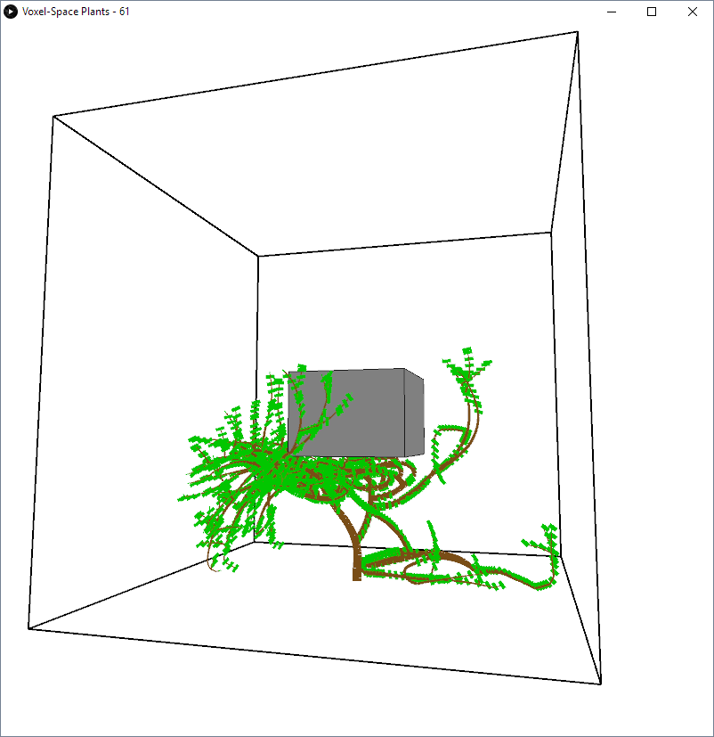
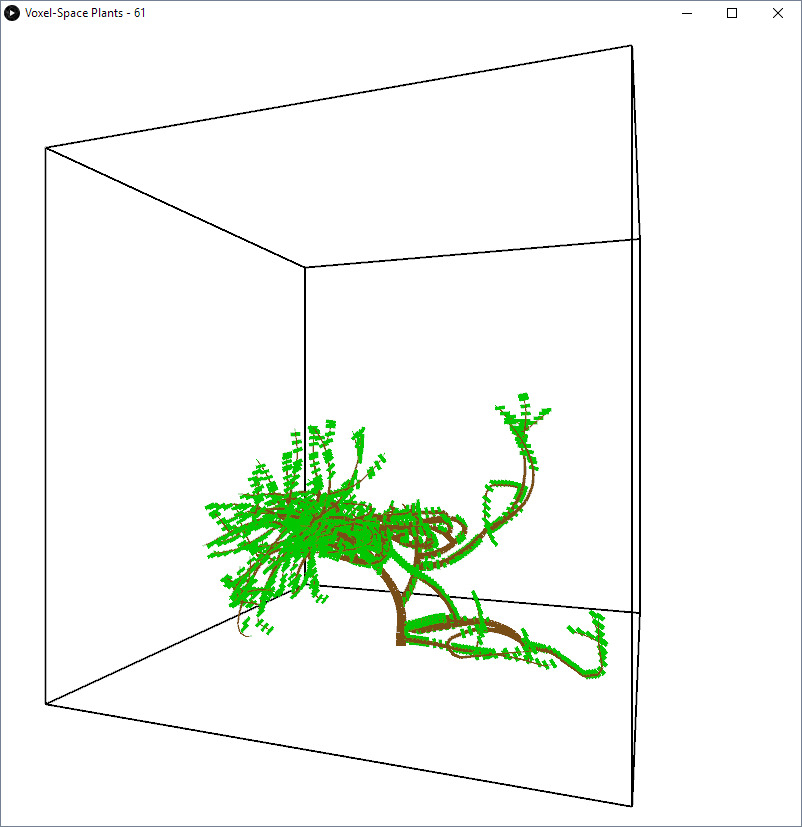
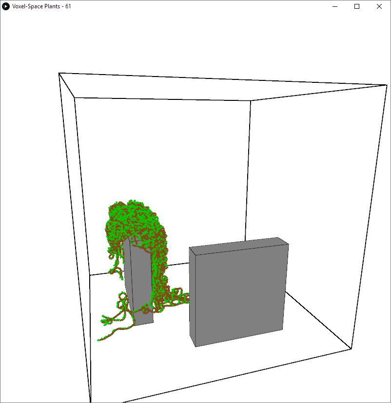
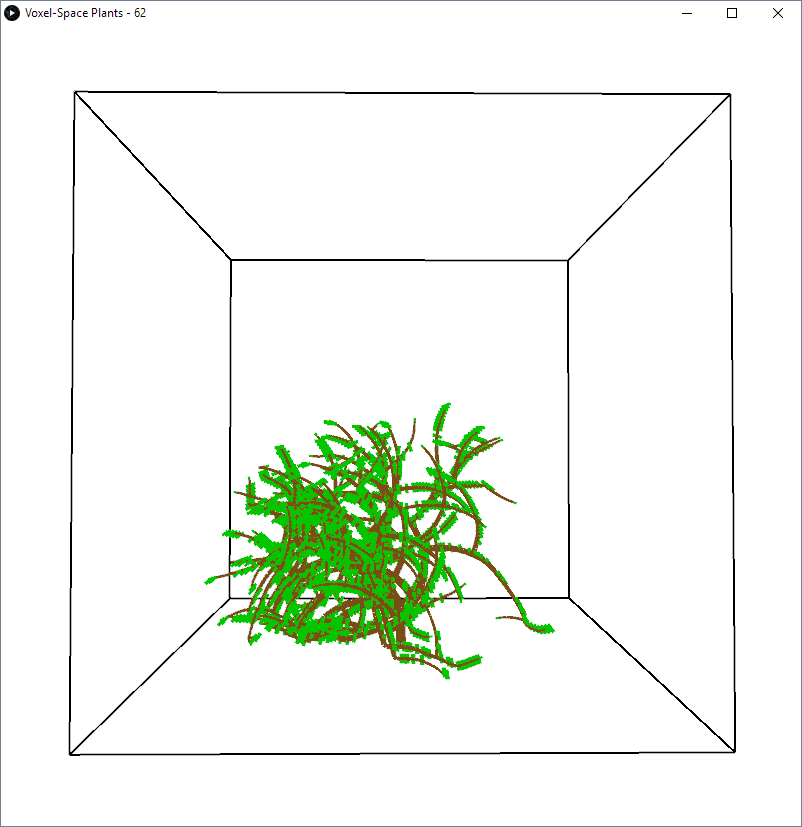
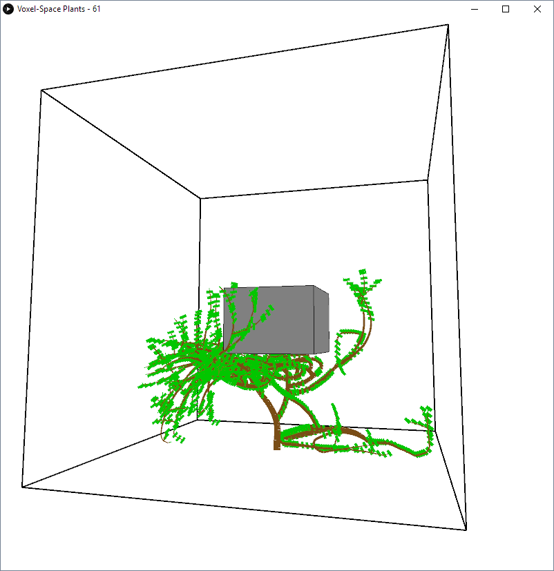
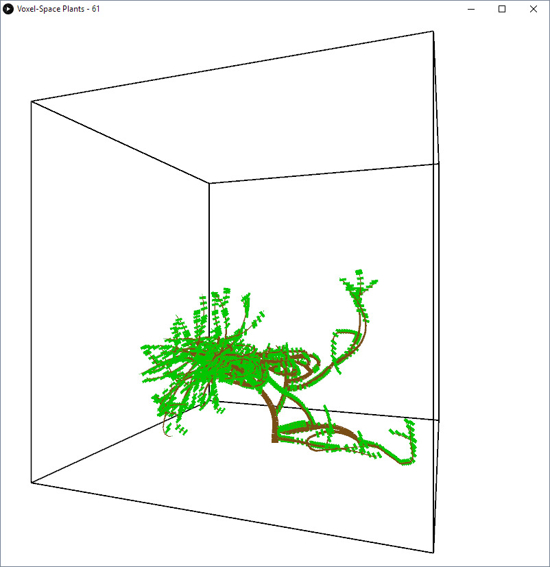

Voxel-Space Plants

Controls:
1,2,3,4: Various plant growth behaviors
Q,W,E,A: Various obstacle arrangements
Mouse: Move camera
Concept:
A plant growth simulation using voxel-space approximation. The plants grow segments at a time and are subject to a number of parameters that affect growth patterns including ability to fight gravity, wall-clinginess, frequency of branching, etc.
Credits:
Paper Referenced: "Voxel Space Automata"
Processing.org








